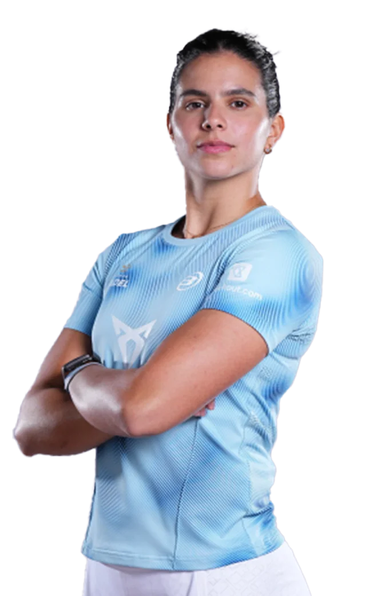
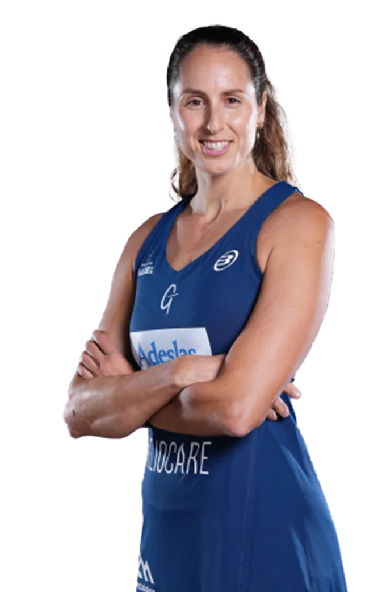
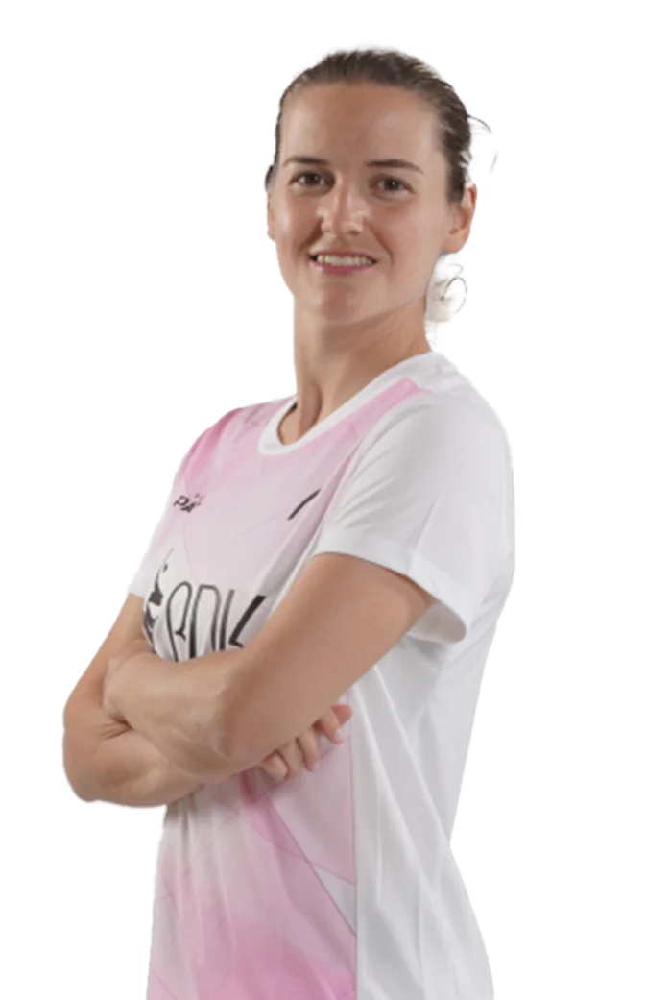
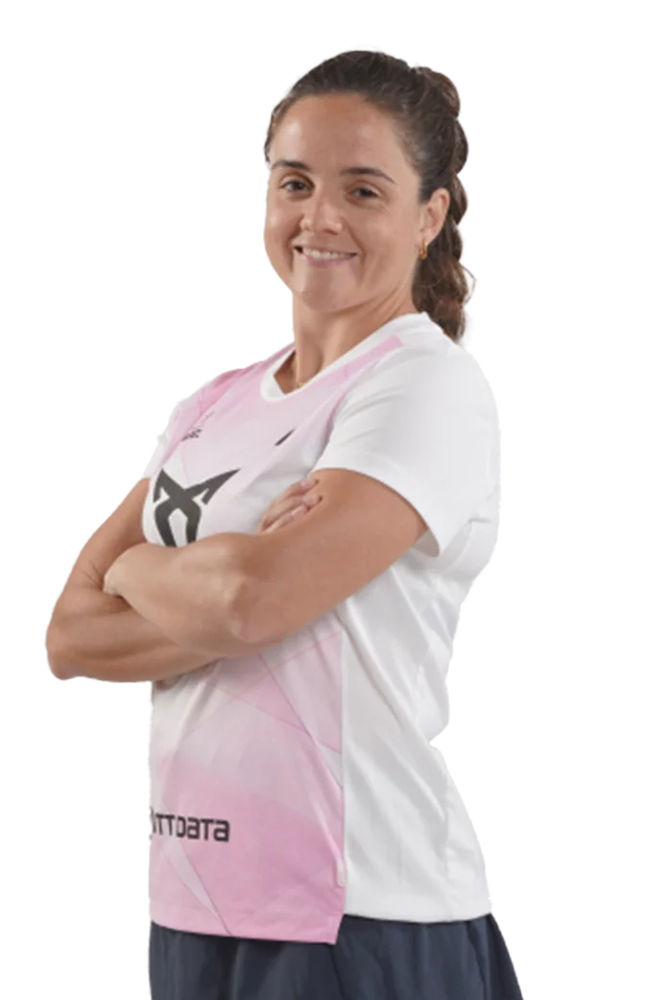
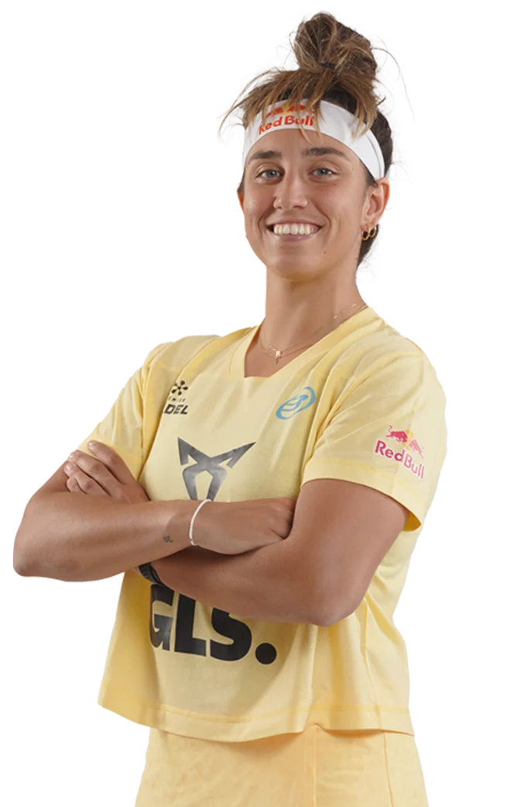
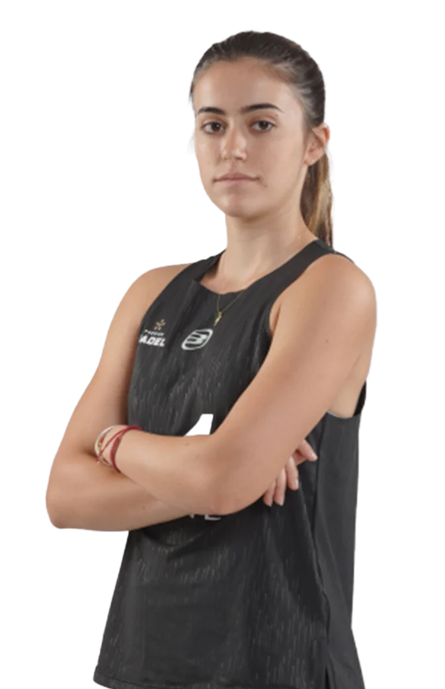
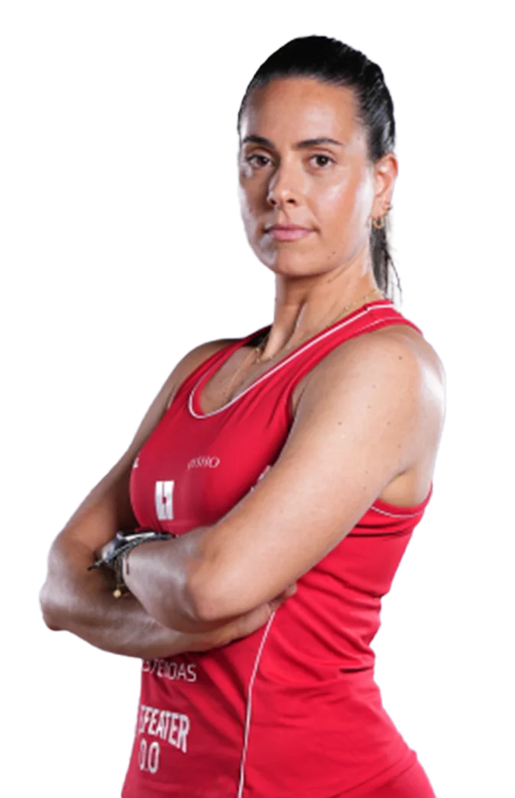
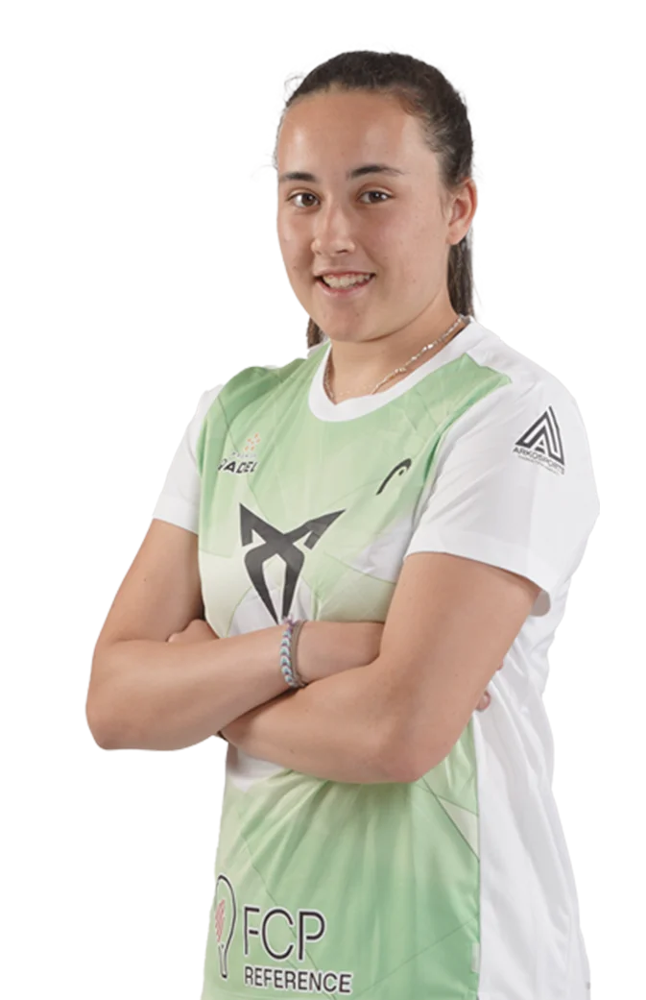
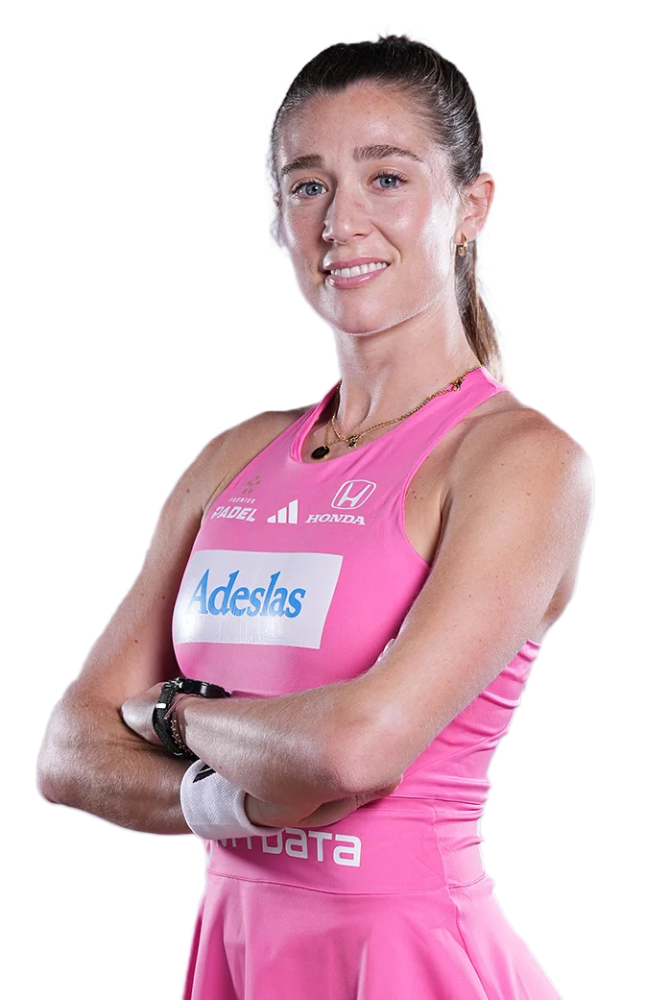
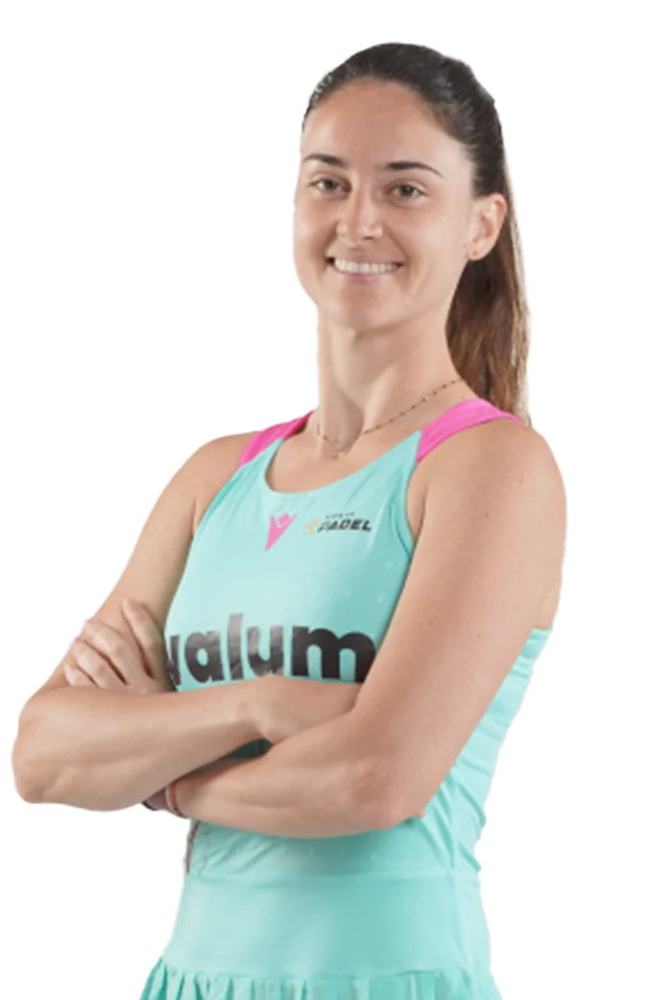

FIP RANKING
Ranking internacional de los 10 mejores jugadores de padel masculino
- 1-
 Delfina
Delfina
Brea
Senesi
PUNTOS:18060
- 1-
 Gemma
Gemma
Triay
Pons
PUNTOS:18060
- 3-Ariana
Sanchez
Fallada
PUNTOS:14720
- 3-Paula
Josemaria
Martin
PUNTOS:14720
- 5-Beatriz
Gonzalez
Fernandez
PUNTOS:13040
- 5- Claudia
Fernandez
Sanchez
PUNTOS:13040
- 7-Sofia
Araujo
PUNTOS:7030
- 8- Andrea
Ustero
Prieto
PUNTOS:6625
- 9-Marta
Ortega
Gallego
PUNTOS:6435
- 10-Tamara
Icardo
Alcorisa
PUNTOS:6050
Los puntos FIP se obtienen participando y ganando partidos en torneos oficiales de la Federación Internacional de Pádel (FIP), como los Premier Padel y el CUPRA FIP Tour, donde mayor es la categoría del torneo y más rondas se avanzan, más puntos se consiguen; por ejemplo, ganar un torneo Platinum da 300 puntos y un torneo Gold da 150 puntos, sumándose a un ranking de 52 semanas donde los puntos se defienden o se pierden anualmente.